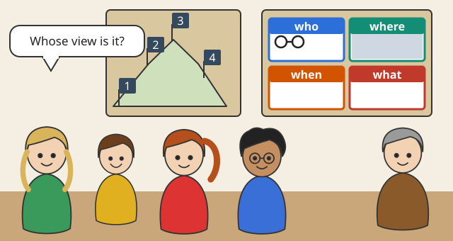
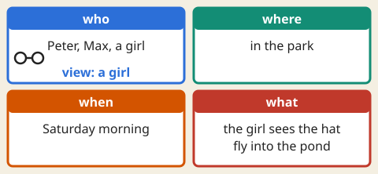

Wessen Sicht? Dieselbe Szene, eine andere Brille
Mit einem KI-Tutor lernen
Ein KI-Tutor erklärt dir diese Seite und hilft dir bei den Aufgaben. Wähl deinen Assistenten:
Mit Claude öffnen Mit ChatGPT öffnen Mit Mistral Vibe öffnen
Du nutzt dein eigenes Konto beim Anbieter. Der Assistent ist kein Angebot von lernapps.net: lernapps liefert nur Inhalte und Aufgaben. Die Wahl gilt für alle Seiten, nur auf diesem Gerät.
Eine Brille an der story map

Das Brillenzeichen am Feld who gehört zur story map, nicht zu Amir.
Quelle: eigene Zeichnung. Lizenz: CC-BY-4.0.Die story map hat zwei neue Zeichen: ein Brillenzeichen am Feld who und eine Stimmungsfläche im Feld where. Hier geht es um die Brille. Sie fragt: Wessen Sicht erzählt die Geschichte?
Das kannst du danach: Du erkennst, wessen Sicht eine Geschichte hat, und erzählst dieselbe Szene aus der Sicht einer anderen Figur neu.
Aufgabe
Lösung
Eine Figur der Geschichte richtige Antwort
Bei „I“ spricht eine Figur über sich selbst. Das nennt man die Ich-Form.
Jemand, der nicht in der Geschichte vorkommt
Dann stünde he oder she statt „I“.
Die Person, die das Buch geschrieben hat
„I“ ist die Figur im Text, nicht die Autorin oder der Autor.
„I“ zeigt, dass eine Figur der Geschichte erzählt.
Lies „The Late Bus“
Sophie hat die Szene aufgeschrieben. Jede Zeile hat eine Nummer, damit du sie später nennen kannst. Das nennt man belegen: Du zeigst mit der Zeilennummer, wo etwas steht.
1 On Wednesday morning I woke up late.
2 My phone said 8:10, and school started at 8:45.
3 I jumped out of bed and ran downstairs.
4 Mrs Parker was already in the car with Peter.
5 “Take the bus, Sophie, you are late!” she called.
6 Ellie was standing at the gate, but she did not look at me.
7 I thought she was angry with me.
| Englisch | Deutsch |
|---|---|
| gate | das Tor am Garten |
8 The bus was late too, so Ellie and I waited at the stop.
9 Nobody said anything.
10 My stomach felt tight.
11 Yesterday I laughed at Ellie’s new haircut, and I thought she remembered it.
12 At last the bus came.
13 Ellie sat down next to Amir, not next to me.
14 I looked out of the window and felt terrible.
| Englisch | Deutsch |
|---|---|
| stomach | der Bauch, der Magen |
| tight | eng, zusammengezogen |
| haircut | die Frisur, der Haarschnitt |
| terrible | schrecklich |
| at last | endlich |
Aufgabe
Lösung
Ellie schaut sie nicht an richtige Antwort
Das sieht Sophie in Zeile 6. Daraus schließt sie etwas.
Ellie sagt es ihr am Morgen
Ellie sagt nichts, Sophie vermutet es nur.
Mrs Parker erzählt es ihr
Mrs Parker ruft nur, dass Sophie den Bus nehmen soll.
Sophie schließt aus dem, was sie sieht.
15 At school Mr Hill was waiting at the door.
16 “Good morning, Sophie,” he said. “Where is your bag?”
17 My bag? I looked down.
18 It was not there. I forgot it at home!
19 Then Ellie smiled and held up my bag.
20 “It was on the stairs,” she said. “I wanted to give it to you, but I thought you were angry with me!”
| Englisch | Deutsch |
|---|---|
| stairs | die Treppe |
Was die Brille sieht und was nicht
Sophie erzählt in der Ich-Form. Wer „I“ sagt, weiß nur, was sie oder er selbst sieht, denkt und fühlt, und kann sich über die anderen irren. Die Brille am Feld who zeigt, wessen Sicht gemeint ist.
So sieht die Brille an der Geschichte vom roten Hut aus Kapitel 1 aus. Diesmal erzählt das Mädchen.

Die Geschichte vom roten Hut aus Kapitel 1 mit Brille: Das Mädchen im roten Mantel erzählt. Die Ereignisse bleiben dieselben.
Quelle: eigene Zeichnung. Lizenz: CC-BY-4.0.Merke
Neue Sicht: das Geschehen bleibt, die Brille wechselt. Pronomen, Wissen und Gefühl ändern sich, die Zeitform bleibt das simple past.
Verstehen, belegen, urteilen und neu erzählen
Die Aufgaben haben vier Stufen: erst verstehen, dann mit Zeilen belegen, dann urteilen, zuletzt neu erzählen.
Stufe 1: Verstehen
Aufgabe
Lösung
Richtige Antwort: Zeile 10: My stomach felt tight. – Sophie ist angespannt; Zeile 14: I looked out of the window and felt terrible. – Sophie ist traurig; Zeile 19: Ellie smiled. – Ellie ist freundlich
„Tight“ (eng) zeigt Anspannung, „terrible“ (schrecklich) zeigt Traurigkeit und „smiled“ zeigt Freundlichkeit.
Stufe 2: Belegen mit Zeilen
Aufgabe
Lösung
Zeile 7 richtige Antwort
Eine Vermutung.
Zeile 11 richtige Antwort
Auch eine Vermutung.
Zeile 9
Das merkt Sophie selbst.
Zeile 12
Ein Ereignis.
Das Wort „thought“ zeigt eine Vermutung.
Aufgabe
Lösung
Zeile 18 richtige Antwort
Hier merkt Sophie, dass die Tasche fehlt.
Zeile 3
Hier läuft Sophie nur nach unten.
Zeile 15
Ein Ereignis.
Die Figur weiß nur, was sie bemerkt.
Stufe 3: Meinung
Aufgabe
Lösung
Wir wissen nicht, warum Ellie schweigt richtige Antwort
Aus Sophies Sicht bleibt das ein Rätsel.
Wir erfahren erst spät, dass Ellie Sophies Tasche hat richtige Antwort
Sophie weiß es nicht, also wissen wir es auch nicht.
Die Pronomen sind anders
Das ist kein Grund für Spannung.
Ellie kommt gar nicht vor
Ellie kommt in Sophies Geschichte vor.
Mit der Sicht ändert sich, was wir wissen und fühlen.
Stufe 4: Neu erzählen
Aufgabe
Jetzt erzählt Ellie aus „The Late Bus“ selbst, in der Ich-Form im simple past. Ellie hat Sophies Tasche und denkt, Sophie sei böse. Schreibe je einen Satz nach dem Hinweis.
- I · wait · at the gate · hold · Sophie's bag
- I · think · Sophie · be angry
Lösung
- I waited at the gate and held Sophie's bag. (auch richtig: I waited at the gate and I held Sophie's bag.; I waited at the gate with Sophie's bag.; I was waiting at the gate with Sophie's bag.; I was waiting at the gate and had Sophie's bag.; I held Sophie's bag and waited at the gate.)
- I thought Sophie was angry. (auch richtig: I thought Sophie was angry with me.; I thought that Sophie was angry.; I thought that Sophie was angry with me.; I thought she was angry.; I thought she was angry with me.)
Aufgabe
Hör zu und schreibe, was du hörst.
- KI
- KI
- KI
Lösung
- Ellie looked at the clock and waited.
- The bus arrived ten minutes late.
- Everybody was quiet on the bus.
Selbst sprechen und aus Ellies Sicht erzählen
Aufgabe
Hör zu, sprich nach und nimm dich auf. Vergleiche dann mit dem Original.
Tipp
Hör dir den Satz zuerst an. Sprich ihn dann langsam nach.
- Whose view do we see?KI
- What does Sophie know about Ellie?KI
- Now let me tell it from Ellie’s side.KI
Zum Aufnehmen braucht diese Aufgabe JavaScript. Die Beispiele kannst du auch ohne anhören.
Lösung
- Whose view do we see?
- What does Sophie know about Ellie?
- Now let me tell it from Ellie’s side.
Offene Aufgabe
Erzähle die Szene bis zum Bus (Zeilen 1 bis 14) aus Ellies Sicht neu. Schreibe vier bis fünf Sätze in der Ich-Form im simple past. Ellie hat Sophies Tasche und denkt, Sophie sei böse. Für Sophie darfst du „Sophie“ oder „she“ schreiben.
Tipp
Die App bewertet deinen Text nicht. Prüfe ihn selbst anhand der Punkte.
Eine gute Antwort enthält:
Lösung
I stood at the gate with Sophie’s bag. Sophie did not look at me and she did not smile. I thought she was angry with me, so I said nothing. At the bus stop we waited and nobody spoke. At last the bus came, and I sat down next to Amir.
Wie es weitergeht
Auf der nächsten Seite erklärt die Stimmungsfläche im Feld where, wie sich ein Ort anfühlt. Du liest, wie Ellie am späten Nachmittag durch den Park geht, und lernst, wie Wörter eine Stimmung machen.
Fehler gefunden oder eine Idee für diese App?